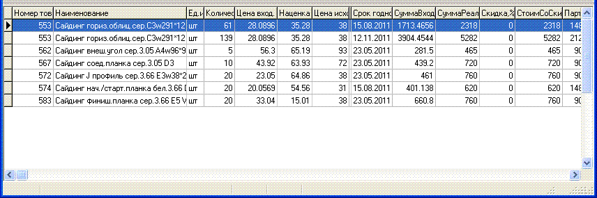

После заполнения заголовка
документа далее мы должны вносить товар в документ, подсказка какие сочетания
клавиш используются приведена в меню внутреннего перемещения.
Добавить товар
в перемещение можно либо по штрихкоду, либо по локальному коду,
введенному вручную. Первый вариант наиболее быстрый - Вы считываете штрихкод
сканером и если он есть в базе данных товаров, то автоматически
откроется форма выбора партий товара (см.ниже), если же такой
штрихкод отсутствует, то будет выдано соответствующее
предупреждение.
Второй вариант -
добавление по локальному коду/наименованию (используется для весового товара
или для такого на котором нет штрихкода) - можно разделить на два подварианта:
первый (горячая клавиша Insert) - добавление через товарную группу - при
выборе этого варианта пользователю будет показан список товарных групп, он
может набрать номер товарной группы на цифровой клавиатуре и нажать клавишу
Enter (или добавить новую товарную группу - см. раздел "Товарные группы"),
затем ему откроется список товаров данной группы, где он перейдет к нужному
товару и нажмет Enter и появится форма выбора партий товара (см.
ниже).
В данной форме выберите (при помощи стрелок
на клавиатуре) необходимую партию и нажмите Enter - появится форма добавления
товара в документ.
По умолчанию предлагается добавить все
количество, что есть в партии, но вы можете изменить количество. Также можно
изменить цену по которой товар будет продаваться на складе-получателе. Внизу
формы может отображаться текущая цена на складе-получателе (если она
зачеркнута - там уже нет партий с остатком).